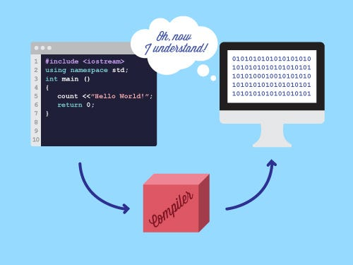

C++ / Interpreters
Programmeertalen
Een verzameling projecten waarin ik onderzoek hoe code wordt gelezen, opgesplitst, geparsed, gecompileerd en uitgevoerd.

Focus
Deze projecten draaien rond de basis van programmeertalen: tokens herkennen, syntax structureren, instructies interpreteren, code compileren en beter begrijpen wat er tussen broncode en uitvoering gebeurt.
Repositories
C / Compiler
mcc
Mijn huidige compilerproject: een volledige C-compiler waar ik nog actief aan werk. Dit project brengt lexing, parsing, semantische analyse en codegeneratie samen in een groter systeem.
Bekijk repositoryC++ / Lexer en parser
lexpar
Een lexer en parser in C++ waarmee ik oefen met het herkennen van tokens en het opbouwen van structuur uit broncode.
Bekijk repositoryInterpreter
Brainfuck interpreter
Een interpreter voor de esoterische programmeertaal Brainfuck, gericht op het uitvoeren van eenvoudige instructies en het beter begrijpen van interpreterlogica.
Bekijk repository